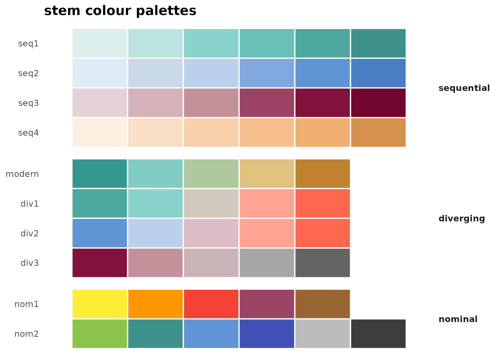
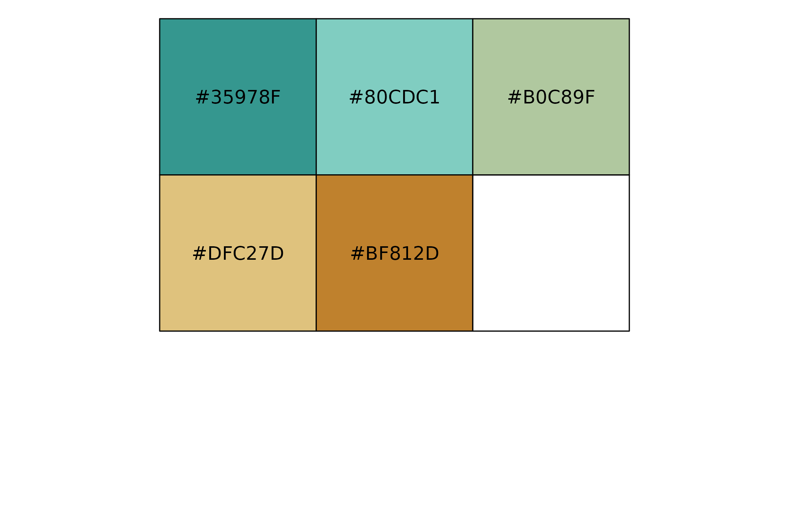
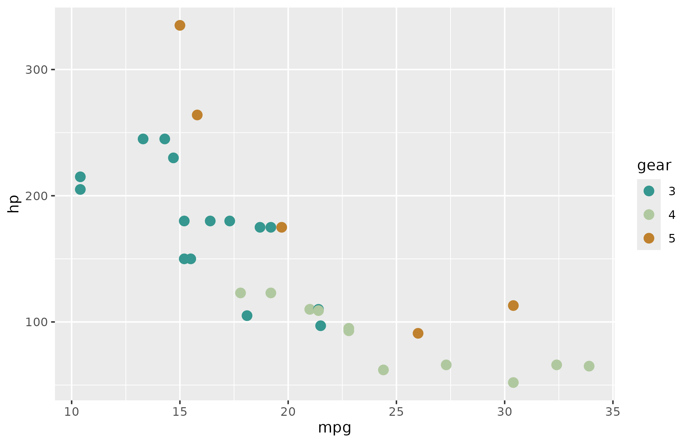
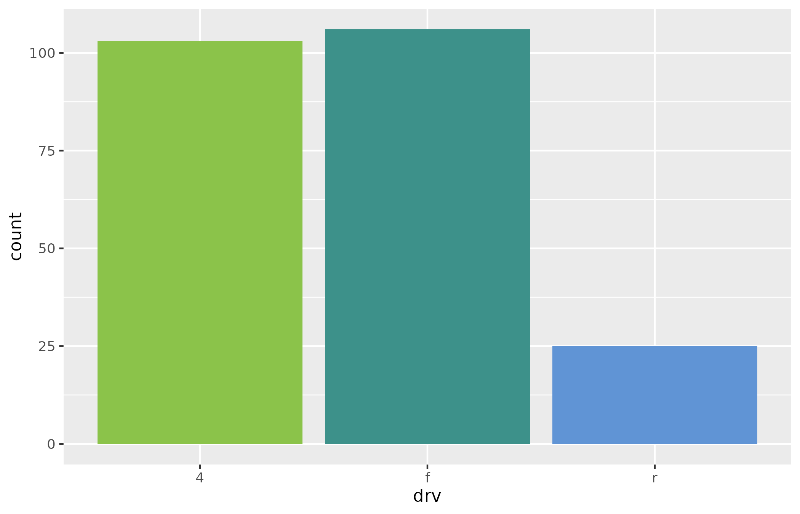
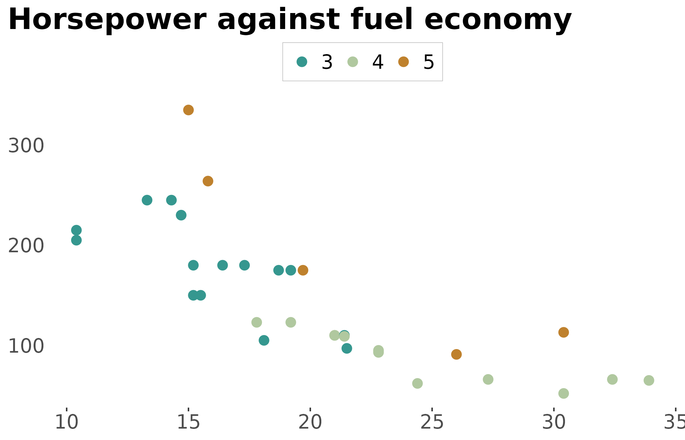
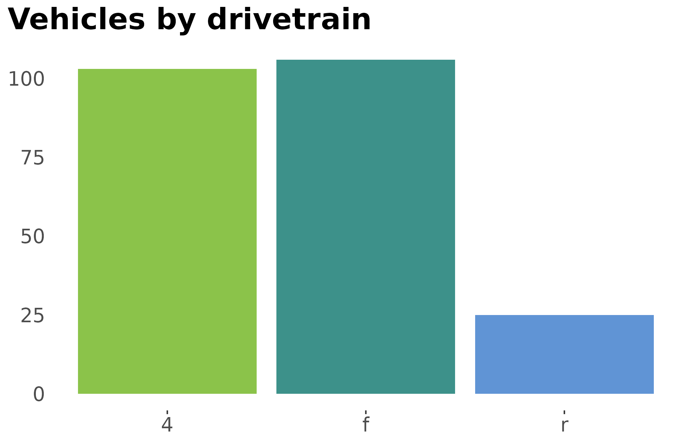

stemtools ships a set of colour palettes and a
complete ggplot2 theme that together give plots the Stem
look. This vignette shows how to browse the palettes, use them the same
way you would any other palette in ggplot2, and how to
switch on theme_stem().
Available palettes
Every palette lives in a single registry, and each one is tagged with a type that all the other palette functions read from. There are three types:
-
Nominal – for variables whose categories have no inherent order (gender, country of origin, occupation).
- Available nominal palettes:
nom1,nom2.
- Available nominal palettes:
-
Sequential – for ordered variables where higher values mean more of something (level of unemployment, share with tertiary education, socioeconomic class).
- Available sequential palettes:
seq1,seq2,seq3,seq4.
- Available sequential palettes:
-
Diverging – for variables with a meaningful midpoint, where low values are the opposite of high values (typically Likert items running from agreement to disagreement).
- Available diverging palettes:
modern,div1,div2,div3.
- Available diverging palettes:
The quickest way to see everything at a glance is
stem_palettes_all(), which draws every palette as a row of
colour tiles, grouped by type (much like
RColorBrewer::display.brewer.all()):

Accessing palette colours
The hex codes for a single palette are returned by
stem_palette(), which takes a palette name and returns all
of its colours. The returned vector carries a type
attribute, and can be inspected visually with show_col()
from scales:
stem_palette("modern")
#> [1] "#35978F" "#80CDC1" "#B0C89F" "#DFC27D" "#BF812D"
#> attr(,"type")
#> [1] "diverging"
attr(stem_palette("modern"), "type")
#> [1] "diverging"
show_col(stem_palette("modern"))
To pull a specific number of colours, use the generator returned by
stem_palette_gen(). For diverging palettes the colours are
sampled symmetrically around the midpoint rather than simply taken from
the front of the palette:
stem_palette_gen("modern")(3)
#> [1] "#35978F" "#B0C89F" "#BF812D"Using palettes in {ggplot2}
Stem palettes plug into ggplot2 exactly like the
built-in scale_*_brewer() or
scale_*_viridis_d() scales. Reach for
scale_colour_stem() (or its American alias
scale_color_stem()) for the colour aesthetic
and scale_fill_stem() for fill. Pick a palette
with the palette argument and, if needed, flip its order
with direction = -1:
mtcars |>
within(gear <- as.factor(gear)) |>
ggplot(aes(x = mpg, y = hp, colour = gear)) +
geom_point(size = 3) +
scale_colour_stem(palette = "modern")
Because these are ordinary discrete scales, any argument accepted by
ggplot2::discrete_scale() – name,
breaks, labels, and so on – can be passed
straight through. Here is a fill scale using a nominal
palette:
ggplot(mpg, aes(x = drv, fill = drv)) +
geom_bar() +
scale_fill_stem(palette = "nom2") +
guides(fill = "none")
The Stem theme
theme_stem() is a complete
ggplot2 theme carrying the Stem look: no gridlines, a top
legend, bold titles and the Stem house font. Because it is complete, you
activate it once with ggplot2::theme_set() and every
subsequent plot picks it up:
theme_set(theme_stem(family = ""))Here family = "" falls back to the graphics device’s
default font, which is handy on machines where the Stem house font
(Calibri) is not installed. In day-to-day use you can simply call
theme_stem() with no arguments.
With the theme active, the same plot as above now carries the Stem styling automatically:
mtcars |>
within(gear <- as.factor(gear)) |>
ggplot(aes(x = mpg, y = hp, colour = gear)) +
geom_point(size = 3) +
labs(title = "Horsepower against fuel economy") +
scale_colour_stem(palette = "modern")
You can also add the theme to a single plot with
+ theme_stem(), and override individual settings through
its arguments – ink (foreground), paper
(background), and accent – or via ..., which
is forwarded to ggplot2::theme():
ggplot(mpg, aes(x = drv, fill = drv)) +
geom_bar() +
scale_fill_stem(palette = "nom2") +
labs(title = "Vehicles by drivetrain") +
theme_stem(family = "", legend.position = "none")
Palettes and the theme are designed to be used together: the
stem_* plotting functions rely on the same palettes, and
pair naturally with theme_stem() set for the whole
session.